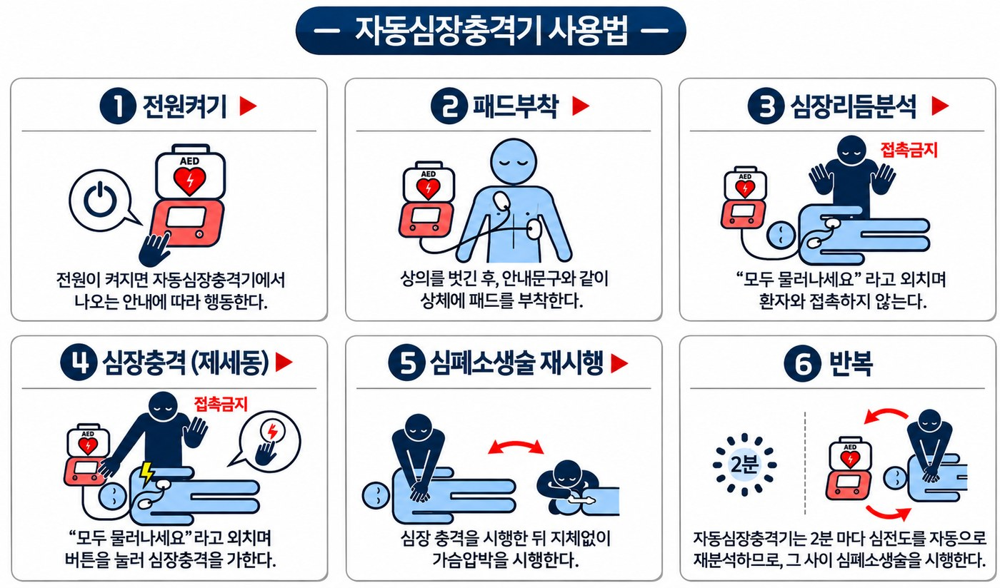

AED(자동 심장 제세동기) 정보
119에 전화하기AED(자동 심장 제세동기) 위치
AED 사용 순서

- 119에 신고하고, 주변 사람에게 AED(자동 심장 제세동기)를 가져와 달라고 부탁하세요.
- AED(자동 심장 제세동기) 전원을 켜고 음성 안내를 따르세요.
- 환자의 가슴을 드러내고 패드 그림대로 오른쪽 쇄골 아래와 왼쪽 옆구리에 패드를 붙이세요.
- 심장 리듬을 분석하는 동안 아무도 환자에게 닿지 않게 하세요.
- 쇼크가 필요하다는 안내가 나오면 모두 물러나게 한 뒤 쇼크 버튼을 누르세요.
- 바로 가슴압박을 다시 시작하고, 구급대가 올 때까지 AED(자동 심장 제세동기) 안내를 따르세요.